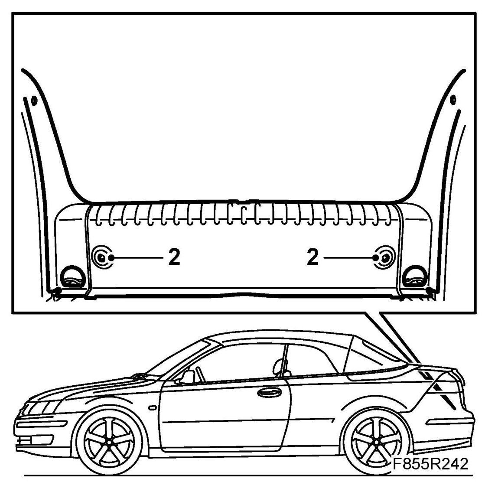
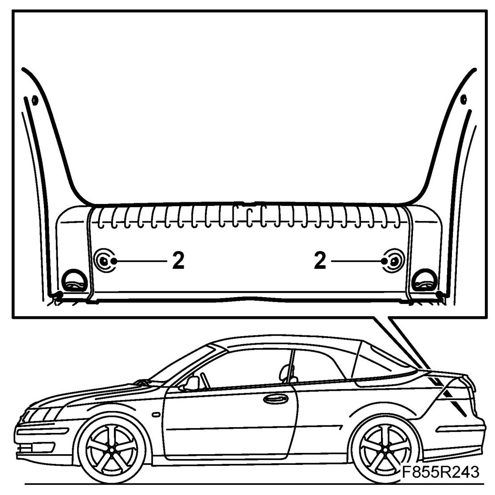

Scuff Plate, Luggage Compartment Opening, CV
Scuff Plate, Luggage Compartment Opening, CV
To remove
1. Open the boot lid and lift up the luggage compartment mat.
2. Remove the scuff plate two-stage rivets.

3. Remove the scuff plate by pulling it upwards.
To fit
1. Lift up the luggage compartment mat. Press the scuff plate clips securely into the holes in the sill.
2. Fit the two-stage rivets and fit the luggage compartment mat in place.

3. Check the fit and close the boot lid.